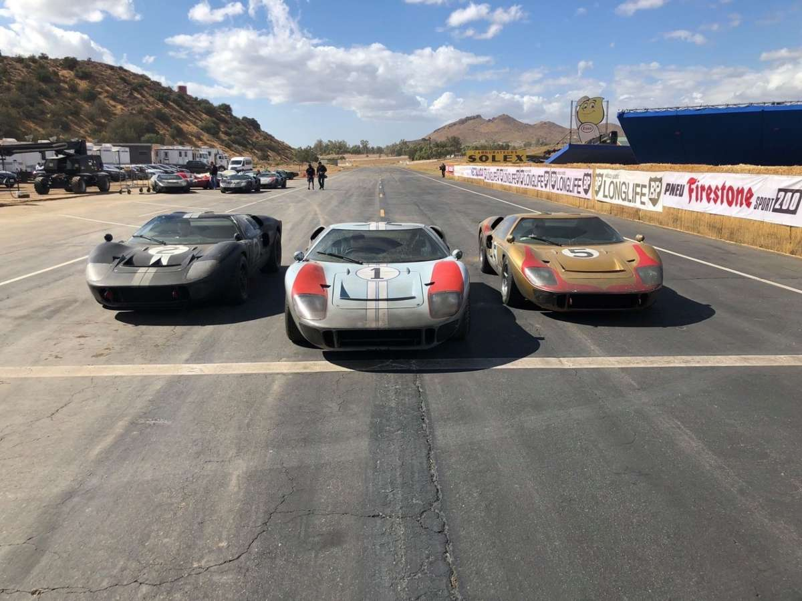
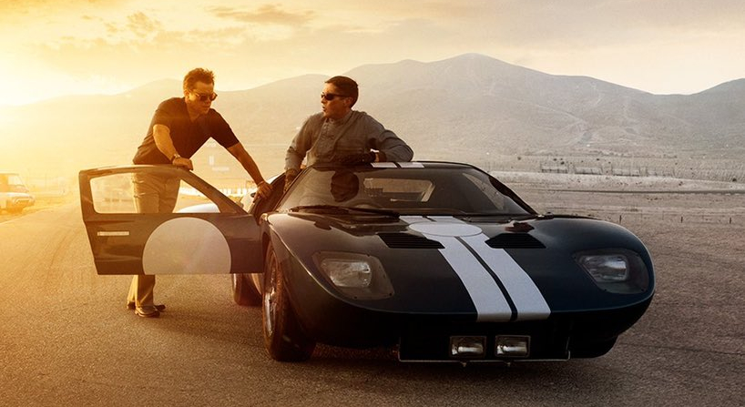

Ford v Ferrari (titulada: Contra lo imposible en Hispanoamérica y Le Mans '66 en España) es una película dramática deportiva estadounidense de 20193 dirigida por James Mangold y escrita por Jez Butterworth, John-Henry Butterworth y Jason Keller. La película está protagonizada por Matt Damon y Christian Bale, con Jon Bernthal, Caitriona Balfe, Tracy Letts, Josh Lucas, Noah Jupe, Remo Girone y Ray McKinnon en papeles secundarios.
Si eres de los que siempre se preguntan cuando ven una película “¿Cómo hicieron eso?” estás en la nota correcta pues hablaremos sobre algunos de los trucos y de la gran producción que hubo detrás del film Ford vs Ferrari que se estrenó el año pasado y que si no la has visto ¡Spoiler Alert! En el film vimos algunas recreaciones de la década de los 60´s, por ejemplo la participación de Ken Miles (Christian Bale) en las 24 Horas de Daytona de 1966 y en las 24 Horas de LeMans en el mismo año.
Matt Damon interpreta al tejano Carroll Shelby, el primer estadounidense en ganar las 24 horas de Le Mans, la carrera de resistencia por excelencia. Un tipo carismático, con don de gentes, al que la compañía Ford le dio un cheque en blanco para fabricar desde cero un bólido que derrotase a los todopoderosos Ferrari de los años 60. El resultado fue el icónico GT40.
"Es bonito que el director vaya diciendo que soy un bastardo complicado, ¿no?”. Christian Bale estalla en carcajadas cuando escucha que el director de Le Mans ‘66, James Manglod, opina que su carácter se asemeja al de su personaje: el rebelde, desabrido, contestatario, pero también legendario piloto británico Ken Miles